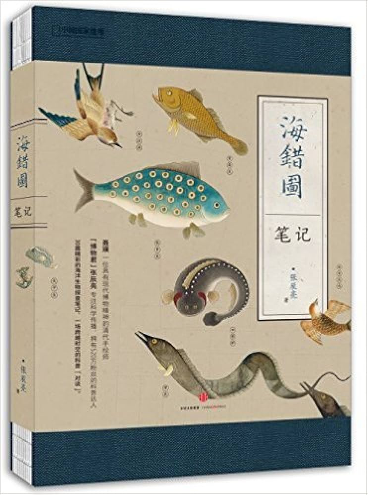

📖《海错图笔记》是科普博主"博物君"张辰亮的代表作。清代画家聂璜绘制了《海错图》，记录了300多种海洋生物。张辰亮用现代科学知识考证这些生物的真实身份，并记录了各种水生物的食用方法。
这本书兼具科学性、趣味性和实用性，是近年来最优秀的本土科普著作之一。
看过的最好的水生物书，很多地方都记录了怎么吃这些生物。
作为《海错图》的现代解读，这本书太有意思了。聂璜的原图精美而神秘，但很多生物画得并不准确，甚至带有神话色彩。张辰亮用扎实的生物学知识，一一考证这些生物的真身，过程像破案一样精彩。
最有趣的是书中记录的各种海鲜的食用方法。作者显然是个吃货，在考证生物身份的同时，也不忘告诉大家这个好不好吃、怎么做最好吃。这种"科普+美食"的混合风格，让这本书既有学术价值又接地气。读完这本书，再去海鲜市场买菜，感觉整个人都不一样了——不仅认识了很多海洋生物，还知道怎么吃它们！